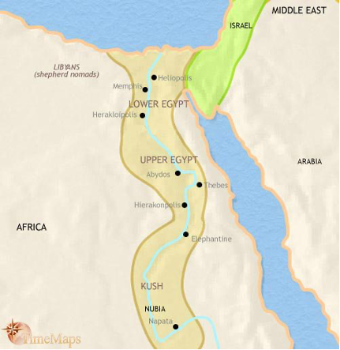
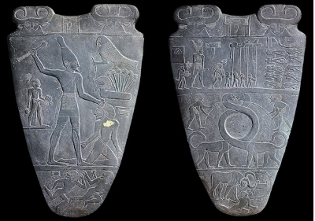
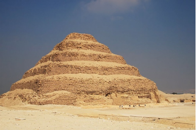

Egypt
Ancient Egypt was broken up into two parts, upper and lower Egypt. They named the two parts based on which way the Nile river ran. Upper Egypt was up stream and Lower Egypt was downstream. The names did not have to do with whether they were north or south. In fact, Upper Egypt was south and Lower Egypt was north. There were five major cities in Ancient Egypt. These cities include Abydos, Thebes, and Nekhen in Upper Egypt and Heliopolis and Memphis in Lower Egypt. Egypt was separated into Upper and Lower Egypt until 3100 BC. Egypt’s deserts and Nile river provide many resources. The deserts provided sand and rock that they used to build pyramids, temples, and homes. The Nile river flooded every year, which made the soil have lots of nutrients. It provided water for crops, fish, and created mud. Mud was also used to make buildings. The crops the Nile provided were wheat, barley, beans, lentils, flax, and papyrus.
The Egyptians believed that the world started out dark with chaotic waters. Atum, the sun god and lord of the universe, made a hill rise out of the water. This hill was Egypt. The Egyptians also believed in a god named Horus. He was the king of Egypt. His parents were Osiris and Isis. His father, Osiris, was killed and split into pieces by his brother Seth. He then scattered Osiris’s pieces all over Egypt. Osiris’s wife, Isis, collected all the pieces of Osiris and her sister put him back together. Osiris became god of the underworld. Isis gave birth to Horus. Isis and Horus hid from Seth until Horus was ready to fight him. Horus’s destiny was to defeat his uncle, Seth. During their battle Horus eye got injured. Horus gave his eye to his father. This made his vison stronger because he now had an eye in the past and one in the future. Horus was also depicted as a falcon because falcons have very good vison. Horus’s was seen as a savior and strong leader of Egypt.
Pharaohs were rulers of Egypt. However, this was not their formal title. They are only called Pharaohs in the Bible. The Egyptian refereed to them as Horus and King of Upper and Lower Egypt. They believed that when their Pharaohs were given the crown of Horus, they became a reincarnation of him because the Pharaohs were descended from Horus. They also believed Pharaohs become gods when they die. That is why they go through the detailed process of mummifying them. The word pharaoh means great house. There were 300 Pharaohs of Egypt that were both male and female. The Pharaohs were the middleman between the gods and the human. This means they communicated with them and provided for them. They also were the protectors of the people. They prevented chaos, allowing things to stay balanced and in order.
The Egyptians built elaborate tombs for their Pharaohs. They did this so they could safely transition into becoming a god. These tombs were the pyramids. They had a hall that lead to the tomb that sometimes had hieroglyphs about transitioning to the afterlife. The most well-known pyramids are the pyramids of Giza. These are located in lower Egypt in fact, no pyramids are in Upper Egypt. These pyramids are called Menkaure, Khafra, and Khufu. Khafra is where the famous Sphinx is located. When a Pharaoh dies the Egyptians mummified them. Mummification was how the Egyptians preserved bodies. They did this by taking the brain out of the nose with a hook like tool. Egyptians did not think the brain was important because they believed the heart was the source of thought and knowledge. They also removed the liver, lungs, intestines, and stomach. They wrapped them up and placed them into jars individually.
The was ancient Egypt relates to my major is that they created mathematics and measurements. These are both very important to my major. Without them computers and programs would have never been created.
Artwork
Palette of Narmer:
The Palette of Narmer was of made of gray and green siltstone and made in the predynastic period. It was used for temple ceremonies. The priest would grind and mix ceremonial paint on it. The largest person on the Palette is king Narmer. Drawing him the largest represents his importance. Some other things depicted on the Palette include, the two ox heads that represent the goddess Hathor. The Egyptians believed that the other gods and goddesses were created by her. The lions with long necks are called serpopards. They represent the mixing of paint through there intertwined necks.
Step Pyramids:
The step pyramids in Egypt were some of the first type invented. The were made in the Old Kingdom era of Egypt. They derived from the tombs called Mastabas. Those were one mound or step with a chapel and a burial chamber. Later the Egyptians built their tombs with more steps to represent the mound of creation and the stair way to heaven. The pyramids were used as tombs for the Egyptian Pharaohs.